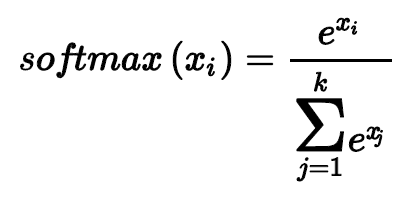
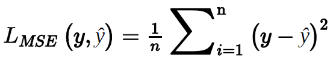
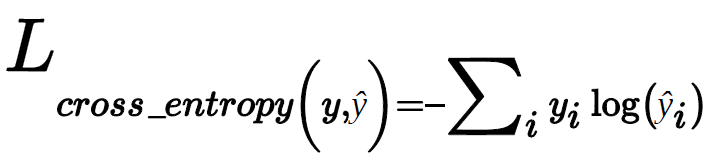

Set seed
Contents
%matplotlib inline
from IPython.core.interactiveshell import InteractiveShell
get_ipython().ast_node_interactivity = 'all'
import torch
import torch.nn as nn
import matplotlib.pyplot as plt
import torch.optim as optim
import numpy as np
Set seed¶
seed = 23
torch.manual_seed(seed)
torch.cuda.manual_seed_all(seed)
np.random.seed(seed)
<torch._C.Generator at 0x2614acf7db0>
Acknowledgement¶
Supp code and exampels Perface > using code example: “”
“ Natural Language Processing with PyTorch by Delip Rao and Brian McMahan (O’Reilly). Copyright 2019, Delip Rao and Brian McMahan, 978-1-491-97823-8.”
One bot / Binary encoding¶
Example 1-1. Generating a “collapsed” one-hot or binary representation using scikit-learn
from sklearn.feature_extraction.text import CountVectorizer
import seaborn as sns
sentence1 = 'Time flies flies like an arrow.'
sentence2 = 'Fruit flies like a banana.'
corpus = [sentence1, sentence2]
vocab = ['an', 'arrow', 'banana', 'flies', 'fruit', 'like', 'time']
#note here a, an are treated as one word, so only an is shwon
one_hot_vectorizer = CountVectorizer(binary=True)
one_hot = one_hot_vectorizer.fit_transform(corpus).toarray()
one_hot
sns.heatmap(one_hot, annot=True,
cbar=False, xticklabels=vocab, # cbar is for the heat value illustartion
yticklabels=['Sentence 1', 'Sentence 2'])
array([[1, 1, 0, 1, 0, 1, 1],
[0, 0, 1, 1, 1, 1, 0]], dtype=int64)
<AxesSubplot:>
TF-IDF representation¶
Example 1-2. Generating a TF-IDF representation using scikit-learn
from sklearn.feature_extraction.text import TfidfVectorizer
import seaborn as sns
tfidf_vectorizer = TfidfVectorizer()
tfidf = tfidf_vectorizer.fit_transform(corpus).toarray()
sns.heatmap(tfidf, annot=True, cbar=False, xticklabels=vocab,
yticklabels= ['Sentence 1', 'Sentence 2'])
<AxesSubplot:>
Pytorch Basic¶
#!conda install pytorch torchvision -c pytorch
def p(t=''):
print('-------'+t+'-------')
print()
Describe()¶
def describe(x):
"""summarise properties of a tensor x
Args:
x (tensor):
"""
print("Type: {}".format(x.type()))
print("Shape/size: {}".format(x.shape))
print("Values: \n{}".format(x))
print()
describe(torch.Tensor(2, 3))
Type: torch.FloatTensor
Shape/size: torch.Size([2, 3])
Values:
tensor([[0., 0., 0.],
[0., 0., 0.]])
Random normal dist¶
describe(torch.rand(2, 3)) # uniform random
describe(torch.randn(2, 3)) # random normal
Type: torch.FloatTensor
Shape/size: torch.Size([2, 3])
Values:
tensor([[0.5866, 0.0962, 0.1946],
[0.3136, 0.0838, 0.3909]])
Type: torch.FloatTensor
Shape/size: torch.Size([2, 3])
Values:
tensor([[ 0.2589, 0.4765, -0.0993],
[-0.8002, -0.0610, -0.3848]])
Tensor from list¶
x = torch.Tensor([[1, 2, 3],
[4, 5, 6]])
describe(x)
Type: torch.FloatTensor
Shape/size: torch.Size([2, 3])
Values:
tensor([[1., 2., 3.],
[4., 5., 6.]])
Tensfor from numpy¶
import torch
import numpy as np
npy = np.random.rand(2, 3)
describe(torch.from_numpy(npy))
Type: torch.DoubleTensor
Shape/size: torch.Size([2, 3])
Values:
tensor([[0.9093, 0.7515, 0.5657],
[0.5321, 0.7644, 0.4786]], dtype=torch.float64)
Tensor properties¶
x = torch.FloatTensor([[1, 2, 3],
[4, 5, 6]])
describe(x)
x = x.long()
describe(x)
x = torch.tensor([[1, 2, 3],
[4, 5, 6]], dtype=torch.int64)
describe(x)
x = x.float()
describe(x)
Type: torch.FloatTensor
Shape/size: torch.Size([2, 3])
Values:
tensor([[1., 2., 3.],
[4., 5., 6.]])
Type: torch.LongTensor
Shape/size: torch.Size([2, 3])
Values:
tensor([[1, 2, 3],
[4, 5, 6]])
Type: torch.LongTensor
Shape/size: torch.Size([2, 3])
Values:
tensor([[1, 2, 3],
[4, 5, 6]])
Type: torch.FloatTensor
Shape/size: torch.Size([2, 3])
Values:
tensor([[1., 2., 3.],
[4., 5., 6.]])
Tensor Operations¶
randn, add, arange, view/reshape
p('randn')
x = torch.randn(2, 3)
x
p('add')
describe(torch.add(x, x))
describe(x + x)
p('arange')
x = torch.arange(6)
x
p('view/reshape')
x = x.view(2, 3)
describe(x)
p('sum')
describe(torch.sum(x, dim=0))
p('transpose')
describe(torch.transpose(x, 0, 1))
-------randn-------
tensor([[-0.5208, -0.1943, 0.2444],
[-0.1555, -0.2432, -0.8521]])
-------add-------
Type: torch.FloatTensor
Shape/size: torch.Size([2, 3])
Values:
tensor([[-1.0416, -0.3887, 0.4888],
[-0.3111, -0.4865, -1.7041]])
Type: torch.FloatTensor
Shape/size: torch.Size([2, 3])
Values:
tensor([[-1.0416, -0.3887, 0.4888],
[-0.3111, -0.4865, -1.7041]])
-------arange-------
tensor([0, 1, 2, 3, 4, 5])
-------view/reshape-------
Type: torch.LongTensor
Shape/size: torch.Size([2, 3])
Values:
tensor([[0, 1, 2],
[3, 4, 5]])
-------sum-------
Type: torch.LongTensor
Shape/size: torch.Size([3])
Values:
tensor([3, 5, 7])
-------transpose-------
Type: torch.LongTensor
Shape/size: torch.Size([3, 2])
Values:
tensor([[0, 3],
[1, 4],
[2, 5]])
Slicing and indexing a tensor¶
x = torch.arange(6).view(2, 3)
describe(x)
describe(x[:1, :2]) # row 0, first two cols
describe(x[0, 1])
Type: torch.LongTensor
Shape/size: torch.Size([2, 3])
Values:
tensor([[0, 1, 2],
[3, 4, 5]])
Type: torch.LongTensor
Shape/size: torch.Size([1, 2])
Values:
tensor([[0, 1]])
Type: torch.LongTensor
Shape/size: torch.Size([])
Values:
1
Complex indexing: noncontiguous indexing of a tensor¶
index_select¶
# indices = torch.LongTensor([0, 2])
indices = torch.tensor([0,2])
describe(torch.index_select(x, dim=1, index=indices)) # 0, 2th col only
Type: torch.LongTensor
Shape/size: torch.Size([2, 2])
Values:
tensor([[0, 2],
[3, 5]])
particular row + col¶
x
p()
row_indices = torch.arange(2).long()
row_indices
p()
col_indices = torch.LongTensor([0, 1])
col_indices
p('particular row col elements')
describe(x[row_indices, col_indices]) # row0,col0 + row1,col1
p('cat based rows')
describe(torch.cat([x, x], dim=0))
p('stack') # stack another depth, depth: 2, row: 2, col: 2
describe(torch.stack([x, x]))
tensor([[0, 1, 2],
[3, 4, 5]])
--------------
tensor([0, 1])
--------------
tensor([0, 1])
-------particular row col elements-------
Type: torch.LongTensor
Shape/size: torch.Size([2])
Values:
tensor([0, 4])
-------cat based rows-------
Type: torch.LongTensor
Shape/size: torch.Size([4, 3])
Values:
tensor([[0, 1, 2],
[3, 4, 5],
[0, 1, 2],
[3, 4, 5]])
-------stack-------
Type: torch.LongTensor
Shape/size: torch.Size([2, 2, 3])
Values:
tensor([[[0, 1, 2],
[3, 4, 5]],
[[0, 1, 2],
[3, 4, 5]]])
Linear algebra: add, multiplication¶
x2 = torch.ones(3, 2)
x2
x2[:, 1] += 1 # all row, col 1
describe(x2)
tensor([[1., 1.],
[1., 1.],
[1., 1.]])
Type: torch.FloatTensor
Shape/size: torch.Size([3, 2])
Values:
tensor([[1., 2.],
[1., 2.],
[1., 2.]])
mm, type must be the same¶
x1 = torch.arange(6).view(2, 3).float()
describe(x1)
describe(x2)
describe(torch.mm(x1, x2))
Type: torch.FloatTensor
Shape/size: torch.Size([2, 3])
Values:
tensor([[0., 1., 2.],
[3., 4., 5.]])
Type: torch.FloatTensor
Shape/size: torch.Size([3, 2])
Values:
tensor([[1., 2.],
[1., 2.],
[1., 2.]])
Type: torch.FloatTensor
Shape/size: torch.Size([2, 2])
Values:
tensor([[ 3., 6.],
[12., 24.]])
Tensors and Computational Graphs¶
Creating tensors for gradient bookkeeping¶
x = torch.ones(2, 2, requires_grad=True)
describe(x)
print(x.grad is None)
Type: torch.FloatTensor
Shape/size: torch.Size([2, 2])
Values:
tensor([[1., 1.],
[1., 1.]], requires_grad=True)
True
requires_grad¶
“When you create a tensor with requires_grad=True, you are requiring PyTorch to manage bookkeeping information that computes gradients. First, PyTorch will keep track of the values of the forward pass. Then, at the end of the computations, a single scalar is used to compute a backward pass. The backward pass is initiated by using the backward() method on a tensor resulting from the evaluation of a loss function. The backward pass computes a gradient value for a tensor object that participated in the forward pass.”
y = (x + 2) * (x + 5) + 3
describe(y)
print(x.grad is None)
p()
z = y.mean()
describe(z)
z.backward()
print(x.grad is None)
Type: torch.FloatTensor
Shape/size: torch.Size([2, 2])
Values:
tensor([[21., 21.],
[21., 21.]], grad_fn=<AddBackward0>)
False
--------------
Type: torch.FloatTensor
Shape/size: torch.Size([])
Values:
21.0
False
.grad¶
the gradient is a value that represents the slope of a function output with respect to the function input Optimizers use the .grad variable to update the values of the parameters.
CUDA Tensors¶
To use a GPU, you need to first allocate the tensor on the GPU’s memory
Before it is run on CPU.
The CUDA API was created by NVIDIA and is limited to use on only NVIDIA GPUs
Transfering the tensor from the CPU to the GPU while maintaining its underlying type. The preferred method in PyTorch is to be device agnostic and write code that works whether it’s on the GPU or the CPU.
print (torch.cuda.is_available())
# preferred method: device agnostic tensor instantiation
device = torch.device("cuda" if torch.cuda.is_available() else "cpu")
print (device)
True
cuda
tensor([0.], device='cuda:0')
x = torch.rand(3, 3).to(device)
describe(x)
Type: torch.cuda.FloatTensor
Shape/size: torch.Size([3, 3])
Values:
tensor([[0.9864, 0.5348, 0.2743],
[0.2985, 0.3224, 0.7795],
[0.5672, 0.4135, 0.9058]], device='cuda:0')
Mixing CUDA tensors with CPU-bound tensors¶
it is expensive to move data back and forth from the GPU. Therefore, the typical procedure involves doing many of the parallelizable computations on the GPU and then transferring just the final result back to the CPU.
y = torch.rand(3, 3)
x + y
---------------------------------------------------------------------------
RuntimeError Traceback (most recent call last)
Input In [13], in <module>
1 y = torch.rand(3, 3)
----> 2 x + y
RuntimeError: Expected all tensors to be on the same device, but found at least two devices, cuda:0 and cpu!
convert to same device¶
cpu_device = torch.device("cpu")
y = y.to(cpu_device)
x = x.to(cpu_device)
x + y
tensor([[1.1606, 1.0611, 0.8188],
[0.4594, 0.7113, 0.9905],
[0.8951, 0.5917, 1.8479]])
More torch API¶
(UN)SQUEEZE¶
UNSQUEEZE: Returns a new tensor with a dimension of size one inserted at the specified position.
Returns a tensor with all the dimensions of input of size 1 removed.
torch.arange(3, 7)
tensor([3, 4, 5, 6])
RAND¶
Returns a tensor filled with random numbers from a uniform distribution on the interval [0, 1)
.normal_()¶
convert to normal distribution
expand()¶
making copies of existance ones and expand horizontally
Feature engineering¶
NLTK¶
from nltk.tokenize import TweetTokenizer
tweet = u"Snow White and the Seven Degrees \
#MakeAMovieCold@midnight:-)"
tokenizer = TweetTokenizer()
print(tokenizer.tokenize(tweet.lower()))
['snow', 'white', 'and', 'the', 'seven', 'degrees', '#makeamoviecold', '@midnight', ':-)']
N-grams¶
sliding window
N-grams are fixed-length (n) consecutive token sequences occurring in the text.
def n_grams(text, n):
'''
takes tokens or text, returns a list of n-grams
'''
return [text[i:i+n] for i in range(len(text)-n+1)]
cleaned = ['mary', ',', "n't", 'slap', 'green', 'witch', '.']
print(n_grams(cleaned, 3))
[['mary', ',', "n't"], [',', "n't", 'slap'], ["n't", 'slap', 'green'], ['slap', 'green', 'witch'], ['green', 'witch', '.']]
lemmatization¶
Lemmas are root forms of words. Go -> went, goes, etc.
Process tweets example¶
import re
import string
from nltk.corpus import stopwords
from nltk.stem import PorterStemmer
from nltk.tokenize import TweetTokenizer
from matplotlib.patches import Ellipse
import matplotlib.transforms as transforms
import numpy as np # Library for linear algebra and math utils
def process_tweet(tweet):
'''
Input:
tweet: a string containing a tweet
Output:
tweets_clean: a list of words containing the processed tweet
'''
stemmer = PorterStemmer()
stopwords_english = stopwords.words('english')
# remove stock market tickers like $GE
tweet = re.sub(r'\$\w*', '', tweet)
# remove old style retweet text "RT"
tweet = re.sub(r'^RT[\s]+', '', tweet)
# remove hyperlinks
#tweet = re.sub(r'https?:\/\/.*[\r\n]*', '', tweet)
tweet = re.sub(r'https?://[^\s\n\r]+', '', tweet)
# remove hashtags
# only removing the hash # sign from the word
tweet = re.sub(r'#', '', tweet)
# tokenize tweets
tokenizer = TweetTokenizer(preserve_case=False, strip_handles=True,
reduce_len=True)
tweet_tokens = tokenizer.tokenize(tweet)
tweets_clean = []
for word in tweet_tokens:
if (word not in stopwords_english and # remove stopwords
word not in string.punctuation): # remove punctuation
# tweets_clean.append(word)
stem_word = stemmer.stem(word) # stemming word
tweets_clean.append(stem_word)
return tweets_clean
Categorizing Words: POS Tagging¶
part-of-speech (POS) tagging
Activiation Function¶
Sigmoid¶
[0, 1]
x = torch.arange(-5., 5., 0.1)
y = torch.sigmoid(x)
plt.plot(x.numpy(), y.numpy())
plt.show();
vanishing/exploding gradient¶
the sigmoid function saturates (i.e., produces extreme valued outputs) very quickly and for a majority of the inputs. This can become a problem because it can lead to the gradients becoming either zero or diverging to an overflowing floating-point value. These phenomena are also known as vanishing gradient problem and exploding gradient problem
As a consequence, it is rare to see sigmoid units used in neural networks other than at the output, where the squashing property allows one to interpret outputs as probabilities
Tanh¶
[-1, 1]
maps the set of real values from (–∞, +∞) to the range [-1, +1].
import torch
import matplotlib.pyplot as plt
x = torch.arange(-5., 5., 0.1)
y = torch.tanh(x)
plt.plot(x.numpy(), y.numpy())
plt.show()
Relu¶
rectified linear unit
clipping the negative values to zero,
[0, +inf]
The clipping effect of ReLU that helps with the vanishing gradient problem can also become an issue, where over time certain outputs in the network can simply become zero and never revive again. This is called the “dying ReLU” problem.
relu = torch.nn.ReLU()
x = torch.arange(-5.,5., 0.1)
y = relu(x)
plt.plot(x.numpy(),y.numpy())
plt.show()
To mitigate that effect, variants such as the Leaky ReLU and Parametric ReLU (PReLU) activation functions have proposed, where the leak coefficient a is a learned parameter.
prelu = torch.nn.PReLU(num_parameters=1)
x = torch.arange(-5., 5., 0.1)
y = prelu(x)
plt.plot(x.numpy(), y.detach().numpy()) # since y requires .grad so detach it to type cast numpy andavoid error
plt.show()
Softmax¶

[0, 1]
softmax = nn.Softmax(dim=1)
x_input = torch.randn(1, 3)
y_output = softmax(x_input)
x_input
y_output
torch.sum(y_output, dim=1) # sum to one
tensor([[ 0.4676, -0.8147, -0.5850]])
tensor([[0.6148, 0.1706, 0.2146]])
tensor([1.])
Loss Functions¶
Mean Squared Error Loss¶

mse_loss = nn.MSELoss()
outputs = torch.randn(3, 5, requires_grad=True)
targets = torch.randn(3, 5)
loss = mse_loss(outputs, targets)
print(loss)
tensor(1.3464, grad_fn=<MseLossBackward0>)
Categorical Cross-Entropy Loss¶

#note
compute how different two distributions are.
We want the probability of the
correct class to be close to 1, whereas the other classes have a probability close
to 0. Log(1) = 0
Product = sum of log
ce_loss = nn.CrossEntropyLoss()
outputs = torch.randn(3, 5, requires_grad=True)
targets = torch.tensor([1, 0, 3], dtype=torch.int64)
loss = ce_loss(outputs, targets)
outputs
targets
print(loss)
tensor([[ 1.3654, -0.6839, -1.2567, 0.6865, -0.1485],
[ 1.6060, -1.1797, 0.6773, -0.0960, -0.3345],
[ 0.5175, -0.5598, -0.3623, -0.0477, 0.8693]], requires_grad=True)
tensor([1, 0, 3])
tensor(1.7233, grad_fn=<NllLossBackward0>)
For above, a vector of random values is first used to simulate network output. Then, the ground truth vector, called targets, is created as a vector of integers because PyTorch’s implementation of CrossEntropyLoss() assumes that each input has one particular class, and each class has a unique index. This is why targets has three elements: an index representing the correct class for each input. From this assumption, it performs the computationally more efficient operation of indexing into the model output
why use e in the formula?¶
There is a limit to how small or how large a number can be.
If input negative -> log gives exponentially small number, if positive, exponentially large number.
Network’s output is assumed to be the vector just prior to applying the softmax function
The log function is the inverse of the exponential function, and log(exp(x)) is just equal to x.
Conclusion
mathematical simplifications are made assuming the exponential
function that is the core of the softmax function and the log function that is used
in the cross-entropy computations in order to be more numerically stable and
avoid really small or really large numbers (log property).
Binary cross-entropy loss¶
bce_loss = nn.BCELoss()
sigmoid = nn.Sigmoid()
probabilities = sigmoid(torch.randn(4, 1, requires_grad=True))
targets = torch.tensor([1, 0, 1, 0], dtype=torch.float32).reshape(4, 1)
probabilities
targets
loss = bce_loss(probabilities, targets)
print(probabilities)
print(loss)
tensor([[0.3914],
[0.2337],
[0.5652],
[0.6740]], grad_fn=<SigmoidBackward0>)
tensor([[1.],
[0.],
[1.],
[0.]])
tensor([[0.3914],
[0.2337],
[0.5652],
[0.6740]], grad_fn=<SigmoidBackward0>)
tensor(0.7239, grad_fn=<BinaryCrossEntropyBackward0>)
Supervised Training¶
Overview¶
Supervised learning requires the following: a model, a loss function, training data, and an optimization algorithm. The training data for supervised learning is pairs of observations and targets; the model computes predictions from the observations, and the loss measures the error of the predictions as compared to the targets. The goal of the training is to use the 8 gradient-based optimization algorithm to adjust the model’s parameters so that the losses are as low as possible.
Optimiser¶
While the model produces predictions and the loss function measures the error between predictions and targets, the optimizer updates the weights of the model using the error signal. In its simplest form, there is a single hyperparameter that controls the update behavior of the optimizer. This hyperparameter, called a learning rate, controls how much impact the error signal has on updating the weights.
Instantiating the Adam optimizer¶
Gradient Descent overview¶
any bookkeeping information, such as gradients, currently stored inside the model (perceptron) object is cleared with a function named zero_grad().
make prediction: the model computes outputs (y_pred) given the input data (x_data).
the loss is computed by comparing model outputs (y_pred) to intended targets (y_target).
The PyTorch loss object (criterion) has a function named backward() that iteratively propagates the loss backward through the computational graph and notifies each parameter of its gradient.
Toy Example¶
import matplotlib.pyplot as plt
import numpy as np
import torch
import torch.nn as nn
import torch.nn.functional as F
import torch.optim as optim
%matplotlib inline
Global Settings¶
LEFT_CENTER = (3, 3)
RIGHT_CENTER = (3, -2)
Pseudo Classification¶
input_dim = 2
lr = 0.001
perceptron = Perceptron(input_dim=input_dim)
bce_loss = nn.BCELoss()
optimizer = optim.Adam(params=perceptron.parameters(), lr=lr)
---------------------------------------------------------------------------
NameError Traceback (most recent call last)
Input In [11], in <module>
1 input_dim = 2
2 lr = 0.001
----> 3 perceptron = Perceptron(input_dim=input_dim)
4 bce_loss = nn.BCELoss()
5 optimizer = optim.Adam(params=perceptron.parameters(), lr=lr)
NameError: name 'Perceptron' is not defined
# each epoch is a complete pass over the training data
for epoch_i in range(n_epochs):
# the inner loop is over the batches in the dataset
for batch_i in range(n_batches):
# Step 0: Get the data
x_data, y_target = get_toy_data(batch_size)
# Step 1: Clear the gradients
perceptron.zero_grad()
# Step 2: Compute the forward pass of the model
y_pred = perceptron(x_data, apply_sigmoid=True)
# Step 3: Compute the loss value that we wish to optimize
loss = bce_loss(y_pred, y_target)
# Step 4: Propagate the loss signal backward
loss.backward()
# Step 5: Trigger the optimizer to perform one update
optimizer.step()
Example¶
The Vocabulary coordinates the integer-to-token mappings that we discussed in “Observation and Target Encoding”. We use a Vocabulary both for mapping the text tokens to integers and for mapping the class labels to integers. Next, the Vectorizer encapsulates the vocabularies and is responsible for ingesting string data, like a review’s text, and converting it to numerical vectors that will be used in the training routine. We use the final assisting class, PyTorch’s DataLoader, to group and collate the individual vectorized data points into minibatches
The Yelp Review Dataset¶
In 2015, Yelp held a contest in which it asked participants to predict the rating of a restaurant given its review. Zhang, Zhao, and Lecun (2015) simplified the dataset by converting the 1- and 2-star ratings into a “negative” sentiment class and the 3- and 4-star ratings into a “positive” sentiment class, and split it into 560,000 training samples and 38,000 testing samples.
Note¶
we use a “light” version of the dataset, which is derived by selecting 10% of the training samples as the full dataset. This has two consequences. First, using a small dataset makes the training–testing loop fast, so we can experiment quickly.
From this smaller subset, we split the dataset into three partitions: one for training, one for validation, and one for testing.
Creating training, validation, and testing splits¶
# Split the subset by rating to create new train, val, and test splits
by_rating = collections.defaultdict(list)
for _, row in review_subset.iterrows():
by_rating[row.rating].append(row.to_dict())
# Create split data
final_list = []
np.random.seed(args.seed)
for _, item_list in sorted(by_rating.items()):
np.random.shuffle(item_libst)
n_total = len(item_list)
n_train = int(args.train_proportion * n_total)
n_val = int(args.val_proportion * n_total)
n_test = int(args.test_proportion * n_total)
# Give data point a split attribute
for item in item_list[:n_train]:
item['split'] = 'train'
for item in item_list[n_train:n_train+n_val]:
item['split'] = 'val'
for item in item_list[n_train+n_val:n_train+n_val+n_test]:
item['split'] = 'test'
# Add to final list
final_list.extend(item_list)
final_reviews = pd.DataFrame(final_list)
Minimally cleaning the data¶
def preprocess_text(text):
text = text.lower()
# adding whitespace around punctuation symbols: 'a!b' => 'a ! b'
text = re.sub(r"([.,!?])", r" \1 ", text)
# removing extraneous symbols that aren’t punctuation for all the splits
# E.g. @ will be removed
text = re.sub(r"[^a-zA-Z.,!?]+", r" ", text)
return text
final_reviews.review = final_reviews.review.apply(preprocess_text)